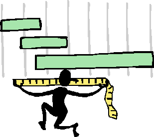

Relevancy Measures

Aboutness
- Is an axiom "about" the same things as the conjecture?
- Fraction of the axiom's symbols that occur in the conjecture
- Example
- Conjecture:
![X]:( even(X) => ?[Y]:equal(Y,divide(X,2)) )
- Axiom:
~?[X]:( greater(X,2) & even(X) & prime(X) )
- 2 of the 4 axiom symbols occur in the conjecture:
even, 2
Axiom score = 2/4 = 0.5
Linkages
- Measures global linkages between clauses
- Consider each unique symbol/arity pair SA
- A term SA relevance is
( # of unique SAs / # of SA occurences )
- A predicate SA relevance is
( number of literals in set /
number of ~SA literals )
- Literal relevance is the product of its literal and predicate
relevances
- Clause relevance is the sum of its literal relevances
Hierarchies
- Theories are often naturally layered, through use of definitions
- Axiom relevance measured by distance from layer(s) of conjecture
- ... ideas under construction ...